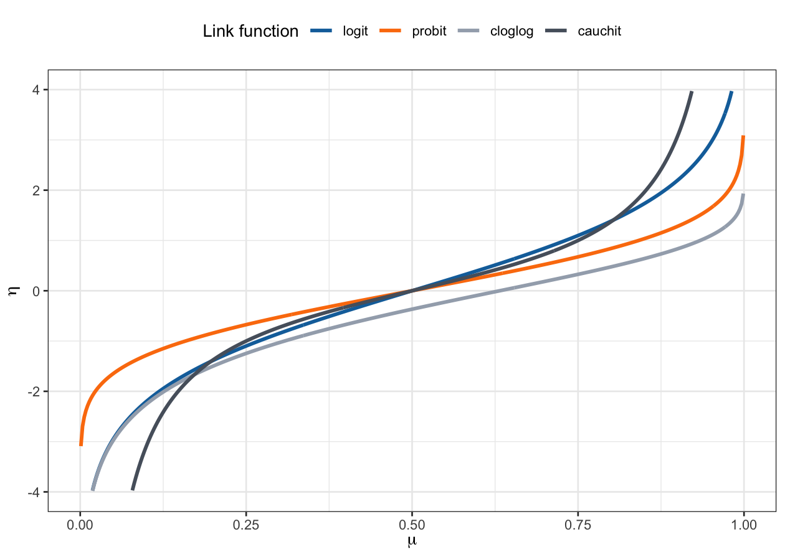
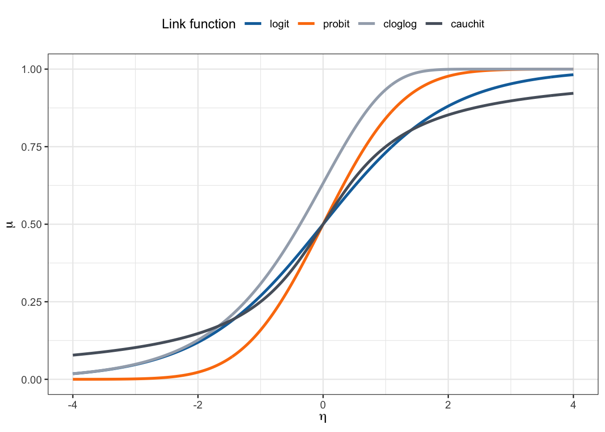

Binary and binomial regression
Statistics III - CdL SSE
Homepage
GLMs for binary data and binomial data are very common, whenever the response variable is dichotomous (e.g., success/failure, yes/no, dead/alive, diseased/healthy, etc.).
This unit will cover a few additional topics related to binary and binomial regression, including:
- grouped vs ungrouped data;
- the choice of the link function;
- interpretation of responses via latent “utilities”;
- and more…
Clearly, the most important aspects have been already covered in Unit B.
Notation and recap
In a binomial regression model, we observe S_i successes out of m_i trials S_i \overset{\text{ind}}{\sim} \text{Binomial}(m_i, \pi_i), \qquad g(\pi_i) = \eta_i = \bm{x}_i^T \beta, \qquad i=1,\dots,n. We model the proportions Y_i = S_i / m_i, whose mean is indeed \pi_i and Y_i \overset{\text{ind}}{\sim} \text{ED}(\mu_i, \mu_i(1-\mu_i)/m_i).
In a binary regression model, we observe Y_i \in \{0,1\}, which is a special case of the model above with number of trials m_i = 1 for all i. Thus, we have Y_i \overset{\text{ind}}{\sim} \text{Bernoulli}(\pi_i), \qquad g(\pi_i) = \eta_i = \bm{x}_i^T \beta, \qquad i=1,\dots,n.
Grouped vs ungrouped data
If Y_{ij} \in \{0,1\} are independent Bernoulli random variables with success probability \pi_i, for j=1,\dots, m_i and i=1,\dots, n, then S_i = \sum_{j=1}^{m_i} Y_{ij} \sim \text{Binomial}(m_i, \pi_i).
Thus, any binomial regression model can be ungrouped into a binary regression model with N = \sum_{i=1}^n m_i observations, by simply repeating the same response and covariate m_i times.
On the other hand, a binary regression model can be grouped only if multiple subjects share the same values for explanatory variables, which is common if they are all categorical.
Link functions I
As discussed, the link function is usually set to g(\cdot) = F^{-1}(\cdot) for some continuous cumulative distribution function F(\cdot) : \mathbb{R} \to (0,1). In other words, g(\pi_i) = F^{-1}(\pi_i) = \bm{x}_i^T\beta, that is \mu_i = \pi_i = F(\bm{x}_i^T\beta). The function F(\cdot) is monotone increasing, differentiable, and maps the real line to the unit interval.
Logit link. The canonical link is the logistic link (or logit link), that is g(\pi_i) = \log\left(\frac{\pi_i}{1-\pi_i}\right) = \bm{x}_i^T\beta, \qquad \text{ with inverse} \qquad \pi_i = \frac{\exp(\bm{x}_i^T\beta)}{1 + \exp(\bm{x}_i^T\beta)}. Indeed, the function F(z) = \exp(z)/(1+\exp(z)) with z \in \mathbb{R} is the cdf of a logistic distribution with mean 0 and variance \pi^2/3.
Link functions II
Probit link. The probit link is based on the standard normal cdf \Phi(\cdot), i.e. g(\pi_i) = \Phi^{-1}(\pi_i) = \bm{x}_i^T\beta, \qquad \text{with inverse} \qquad \pi_i = \Phi(\bm{x}_i^T\beta). The function \Phi(z) with z \in \mathbb{R} is usually computed numerically and equals \Phi(z) = \int_{-\infty}^z \frac{1}{\sqrt{2\pi}} \exp\left(-\frac{u^2}{2}\right) du.
Complementary log-log link. The complementary log-log (cloglog) link is g(\pi_i) = \log(-\log(1-\pi_i)) = \bm{x}_i^T\beta, \qquad \text{with inverse} \qquad \pi_i = 1 - \exp(-\exp(\bm{x}_i^T\beta)). The distribution function F(z) = 1 - \exp(-\exp(z)) with z \in \mathbb{R} is called extreme value distribution. This link function is asymmetric.
Cauchy link. The Cauchy link is g(\pi_i) = \tan(\pi(\pi_i - 1/2)), \qquad \text{with inverse} \qquad \pi_i = \frac{1}{2} + \frac{\text{arctan}(\bm{x}_i^T\beta)}{\pi}. F(z) = 1/2 + \text{arctan}(z)/\pi with z \in \mathbb{R} is the cdf of a standard Cauchy distribution.
Link functions III
Link functions IV

Latent variable threshold models I
A latent variable threshold model is a useful way to interpret binary regression models and choosing their link function g(\cdot). Let Y_i^* be a latent and continuous random variables such that Y_i^* = \bm{x}_i^T\beta + \epsilon_i, \qquad \epsilon_i \overset{\text{iid}}{\sim} F.
A variable is called latent because we do not observe it directly. Instead, we observe only a binary variable encoding whether it exceeds a certain threshold, i.e. Y_i = \mathbb{I}(Y_i^* > \tau), where \mathbb{I}(\cdot) is the indicator function and \tau is a threshold.
By construction, we have Y_i \sim \text{Bernoulli}(\pi_i), with \begin{aligned} \pi_i &= \mathbb{P}(Y_i = 1) = \mathbb{P}(Y_i^* > \tau) = \mathbb{P}(\bm{x}_i^T\beta + \epsilon_i > \tau) = 1 - \mathbb{P}(\epsilon_i \le \tau - \bm{x}_i^T\beta)= 1 - F(\tau - \bm{x}_i^T\beta). \end{aligned}
The data contain no information about \tau, so we can set \tau = 0 without loss of generality. Otherwise, the value of \tau is incorporated into the intercept term.
Likewise, an equivalent model results if we multiply all parameters by any positive constant, so we can take F to have a standard form with fixed variance, such as the standard normal cdf.
Latent variable threshold models II
- For most models F corresponds to a pdf that is symmetric around 0, so F(z) = 1− F(−z). Thus, we obtain \begin{aligned} \pi_i = 1 - F(- \bm{x}_i^T\beta) = F(\bm{x}_i^T\beta), \qquad \text{and} \qquad F^{-1}(\pi_i) = g(\pi_i) = \bm{x}_i^T\beta. \end{aligned} That is, models for binary data naturally take the link function to be the inverse of the standard cdf for a family of continuous distributions for a latent variable.
Logistic regression
The likelihood equations of a binomial regression model are fairly simple: \sum_{i=1}^n \frac{m_i (y_i - \pi_i)}{\pi_i(1 - \pi_i)} x_{ir} f(\eta_i) = 0, \qquad r=1,\dots, p, where f(z) is the density associated with F(z), i.e. its derivative, and the link is g(\cdot) = F^{-1}(\cdot).
In logistic regression f(\eta_i) = F(\eta_i)(1 - F(\eta_i)) = \pi_i(1 - \pi_i), therefore \sum_{i=1}^n m_i (y_i - \pi_i) x_{ir} = 0, \qquad r=1,\dots, p. The solutions therefore has a nice interpretation as a method of moments estimator, in that \sum_{i=1}^n s_i x_{ir} = \sum_{i=1}^n \mathbb{E}(S_i) x_{ir}, \qquad r=1,\dots, p, Moreover, the estimated covariance matrix of \hat{\beta} has a simple form: \widehat{\text{var}}(\hat{\beta}) = (\bm{X}^T \hat{\bm{W}} \bm{X})^{-1} = (\bm{X}^T \text{diag}[m_1 \hat{\pi}_1 (1-\hat{\pi}_1),\dots,m_n \hat{\pi}_n (1-\hat{\pi}_n)] \bm{X})^{-1}
Parameter interpretation
We wish to compare two estimated probabilities, corresponding to two different covariate vectors \bm{x} = (x_1,\dots,x_p) and \bm{x}' = (x_1',\dots,x_p'), namely \hat{\pi}(\bm{x}) = F(\bm{x}^T\hat{\beta})\qquad \text{and} \qquad \hat{\pi}(\bm{x}') = F((\bm{x}')^T\hat{\beta}). This is useful to understand the effect of changing covariates on the response probability.
There are several ways to compare them, listed below, each with its advantages and disadvantages:
The absolute risk, namely the difference (\text{absolute risk}) = \hat{\pi}(\bm{x}') - \hat{\pi}(\bm{x}).
The relative risk, a standardized difference (\text{relative risk}) = \frac{\hat{\pi}(\bm{x}') -\hat{\pi}(\bm{x})}{\hat{\pi}(\bm{x})} = \frac{\hat{\pi}(\bm{x}')}{\hat{\pi}(\bm{x})} - 1.
Both these indicators are quite interpretable but depend on the specific values of \bm{x} and \bm{x}', which makes it difficult to summarize the effect of a given covariate in a single number.
Odds ratio
The odd is another way of summarizing probabilities, familiar to those who gamble: \widehat{\text{odd}}(\bm{x}) = \frac{\hat{\pi}(\bm{x})}{1-\hat{\pi}(\bm{x})}, \qquad \widehat{\text{odd}}(\bm{x}') = \frac{\hat{\pi}(\bm{x}')}{1-\hat{\pi}(\bm{x}')}. An odd represents the money you get if you win the game, for each unit you bet.
The odds ratio is another popular risk measure for comparing the two probabilities (\text{odds ratio}) = \frac{\widehat{\text{odd}}(\bm{x}') }{\widehat{\text{odd}}(\bm{x}) }= \frac{\hat{\pi}(\bm{x}')}{\hat{\pi}(\bm{x})} \cdot \frac{1-\hat{\pi}(\bm{x})}{1-\hat{\pi}(\bm{x}')}. The odds ratio is less intuitive than other risk measures, but it is related to logistic regression.
Let \bm{x} = (x_1,\dots, x_j, \dots, x_p) and \bm{x}' = (x_1, \dots, x_j + c, \dots, x_p), i.e. we compare two situations in which the jth covariate is increased by a fixed amount c, then in logistic regression: (\text{odds ratio}) = \exp(c \hat{\beta}_j), which is a constant number that does not depend on \bm{x}. This is not true e.g. in probit.
Odds ratio and logistic regression
Let \bm{x} be a generic covariate vector and consider its odd under a logistic regression model: \widehat{\text{odd}}(\bm{x}) = \frac{\hat{\pi}(\bm{x})}{1-\hat{\pi}(\bm{x})} = \frac{\exp(\bm{x}^T\hat{\beta})}{1 + \exp(\bm{x}^T\hat{\beta})} \cdot \left(\frac{1}{1 + \exp(\bm{x}^T\hat{\beta})}\right)^{-1} = \exp(\bm{x}^T\hat{\beta}). Thus, the odd of any predicted value is simply the exponential of the linear predictor \bm{x}^T\hat{\beta}.
Consequently, in general the odds ratio is (\text{odds ratio}) = \frac{\widehat{\text{odd}}(\bm{x}') }{\widehat{\text{odd}}(\bm{x}) } = \exp\{(\bm{x}'- \bm{x})^T\hat{\beta} \}
If the only change is in the jth covariate, from x_j to x_j + c, then the odds ratio becomes (\text{odds ratio}) = \exp\{(\bm{x}'- \bm{x})^T\hat{\beta} \} = \exp(c \hat{\beta}_j). In particular, \exp(\hat{\beta}_j) represents the odds ratio after a unitary increase of the jth covariate.
Residuals and diagnostics for binary data
In presence of binary data, namely when m_i = 1 and Y_i \sim \text{Bernoulli}(\pi_i), many the diagnostic tools are degenerate and uninformative.
For example, the
fittedvsresidualsplot, namely the dispersion plot of the points (\hat{\pi}_i, y_i - \hat{\pi}_i), simply shows two parallel lines with slope -1, which is uninformative.As an extreme case, consider the null model in which \pi_1 = \dots = \pi_n, then the X^2 statistic is X^2 = \sum_{i=1}^n \frac{(y_i - \hat{\pi})^2}{\hat{\pi}(1 - \hat{\pi})} = n.
A common solution is to group the data according to some criteria, although this introduces approximations and some arbitrariness (i.e. the Hosmer-Lemeshow test).
In terms of prediction, there exists various indices and techniques that you will cover in Data Mining. The simplest index is the accuracy, i.e. the fraction of correct predictions.
Overdispersion
- In binomial regression with m_i > 1 the core assumption is that S_i \sim \text{Binomial}(m_i, \pi_i), implying that \text{var}(Y_i) = \frac{\pi_i(1-\pi_i)}{m_i}, where implicitly we have set \phi.
References
Agresti, A. (2015), Foundations of Linear and Generalized Linear Models, Wiley.
Salvan, A., Sartori, N., and Pace, L. (2020), Modelli lineari generalizzati, Springer.